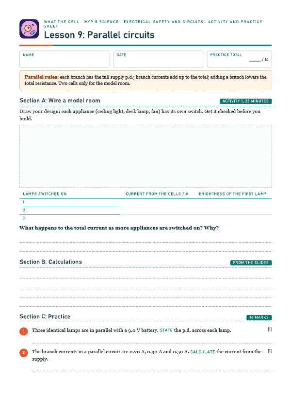

By the end of the lesson you can
- State the rules for current, p.d. and resistance in parallel
- Calculate branch and total currents
- Explain why homes are wired in parallel
- Explain how adding appliances can overload a socket
Keys: arrows or a presentation clicker move the slides, F for full screen. Slides with a red dot have a video or simulation.
Videos (all 5 minutes or less)
- 0:58
Why is your house wired in parallel?
The Why Lab Edu. A quick explanation of why homes do not use series circuits. Slide 9.
- 4:56
Series and parallel circuits
FuseSchool. Current, p.d. and resistance in both kinds of circuit. Slide 8.
Simulations
- Lab
Circuit Practicals Lab: series and parallel
What the Cell. Choose parallel, read the branch and total currents, add a third lamp and unscrew one.
- PhET
Circuit Construction Kit: DC
PhET, University of Colorado Boulder. Build bulbs in parallel with an ammeter in each branch and in the main line.
Print and practise

Activity and practice sheet
Used in the lesson’s activities, with practice questions. Your teacher has the answers.
Download (PDF)Lesson 9 slides
All 21 slides in one file, to read again or print. The video buttons on the slides open YouTube.
Download the slides (PDF)Revising? The Revision tab on the unit page has the unit notes and review.
Notes: Parallel circuits
Branches
In a parallel circuit each component is on its own branch connected across the supply. The current splits at junctions and joins again.
Rule 1: p.d.
Every branch has the full supply p.d.: V = V1 = V2. So lamps in parallel are brighter than the same lamps in series.
Rule 2: current
The branch currents add up to the current from the supply: I = I1 + I2. The branch with the smaller resistance takes the bigger current.
Rule 3: resistance
Adding a branch gives charge another path, so the total current rises and the total resistance falls. The total is less than the smallest branch resistance.
Why homes use parallel
Each appliance gets the full 220 V, can be switched on and off on its own, and keeps working if another one fails.
Overloading
Appliances on one socket or extension lead are in parallel, so their currents add up in its cable. If the total is more than the lead's rating, the cable and plug overheat and can start a fire.
Key words
| parallel circuit | components on separate branches connected across the supply |
|---|---|
| branch | one of the separate paths in a parallel circuit |
| junction | where the current splits or joins |
| V = V1 = V2 | each branch has the full supply p.d. |
| I = I1 + I2 | branch currents add up to the total |
| overloading | too many appliances on one socket or lead, so the current is too big |
| rating | the largest current a socket, lead or fuse is designed to carry |